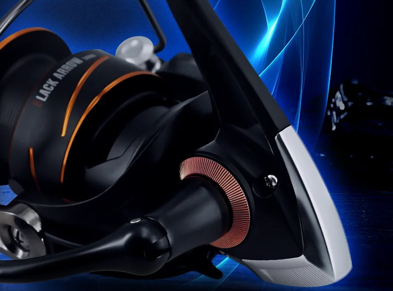
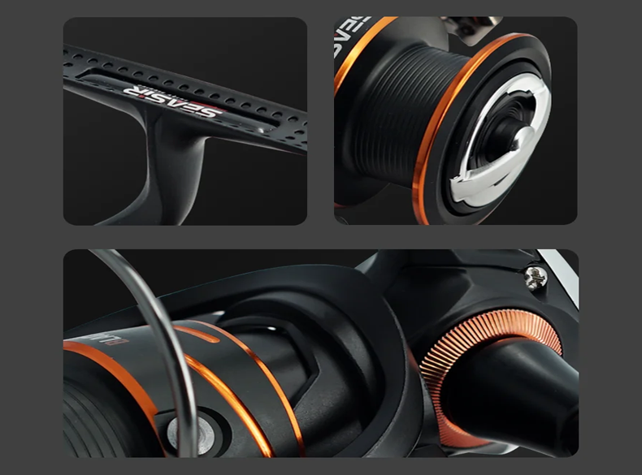

Ficha Rápida
- ✔ Ideal para spinning ligero y eging
- ✔ Nivel: principiante / intermedio
- ✔ Prioriza resistencia y fiabilidad
- ✔ Uso en agua dulce y salada
Descripción General
El SEASIR Black Arrow es un carrete giratorio diseñado para ofrecer
robustez, suavidad de funcionamiento y buena capacidad de freno
dentro de un rango de precio ajustado.
Destaca por su bobina de aluminio, engranaje principal metálico
y una estructura pensada para soportar uso continuado tanto en mar como en agua dulce.
Construcción y Materiales
- Bobina de aluminio de alta resistencia, ligera y duradera.
- Cuerpo de nylon reforzado, equilibrando peso y rigidez.
- Engranaje principal metálico, preciso y resistente al desgaste.
- Eje y componentes internos en acero inoxidable.
- Manivela de aluminio con empuñadura de goma antideslizante.
Rendimiento y Sensaciones
Con sus 5+1 rodamientos de acero inoxidable,
el Black Arrow ofrece una recogida fluida y estable,
adecuada para jornadas largas sin fatiga.
El sistema de freno destaca por su progresividad,
con una potencia que alcanza hasta 13 kg en el tamaño 3000,
más que suficiente para peces medianos y escenarios exigentes desde costa.
Especificaciones Técnicas
- Tamaños: 1000 (bobina shallow) / 2000 / 3000
- Rodamientos: 5 + 1 BB
- Relación de engranaje: 5.2:1
- Freno máximo: 8 kg (1000) / 10 kg (2000) / 13 kg (3000)
- Peso: 197 g / 235 g / 243 g
- Uso: Agua dulce y salada
Uso Recomendado
- Eging y pesca de calamar (1000–2000)
- Spinning ligero y medio
- Pesca recreativa desde costa y puerto
Ventajas
- Bobina de aluminio resistente.
- Buen freno para su gama.
- Funcionamiento suave y estable.
- Muy buena relación calidad-precio.
Desventajas
- No es un carrete de gama alta.
- Requiere mantenimiento tras uso en agua salada.
Conclusión Final
El SEASIR Black Arrow es una opción muy equilibrada para pescadores
que buscan un carrete resistente, suave y económico.
Cumple perfectamente como carrete principal low cost
o como segundo equipo fiable.
Valoración: ★★★★☆ (4/5)